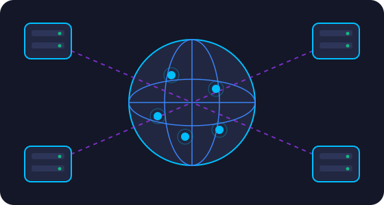

Quién ofrece la nube
Tres grandes proveedores concentran gran parte del mercado, pero existen otras opciones con fortalezas particulares.

Principales proveedores
Los proveedores de servicios en la nube ofrecen soluciones de infraestructura, plataforma y software para empresas y usuarios individuales. Las etiquetas muestran algunos de sus servicios más conocidos.
Amazon Web Services (AWS)
Pionero de la nube moderna (2006) con el catálogo más amplio de servicios y una enorme red de regiones.
Microsoft Azure
Muy integrado con el ecosistema de Microsoft (Windows, Office, Active Directory) y con fuerte enfoque en soluciones híbridas.
Google Cloud Platform (GCP)
Destaca en análisis de datos, inteligencia artificial y contenedores; Kubernetes nació en Google.
IBM Cloud
Orientado a empresas e industrias reguladas, con foco en nube híbrida y tecnologías basadas en Red Hat OpenShift.
Oracle Cloud (OCI)
Ideal para quienes ya usan bases de datos Oracle, con servicios de bases de datos autónomas.
Alibaba Cloud
Proveedor con gran presencia en Asia y una oferta amplia de cómputo, almacenamiento y bases de datos.
Servicios equivalentes entre proveedores
Aunque los nombres cambian, los conceptos son los mismos. Aprender uno te ayuda a entender los demás.
| Tipo de servicio | AWS | Microsoft Azure | Google Cloud |
|---|---|---|---|
| Máquinas virtuales | EC2 | Virtual Machines | Compute Engine |
| Almacenamiento de objetos | S3 | Blob Storage | Cloud Storage |
| Funciones serverless | Lambda | Azure Functions | Cloud Functions |
| Base de datos relacional administrada | RDS | Azure SQL Database | Cloud SQL |
| Kubernetes administrado | EKS | AKS | GKE |
| Red de entrega de contenido (CDN) | CloudFront | Azure CDN / Front Door | Cloud CDN |
¿Cómo elegir un proveedor?
Qué necesitas
Lista los servicios que vas a usar (cómputo, bases de datos, IA) y confirma que el proveedor los ofrece.
Dónde están tus usuarios
Elige regiones cercanas para reducir la latencia y cumplir las leyes de ubicación de datos.
Cuánto vas a pagar
Compara precios con calculadoras oficiales y revisa descuentos, niveles gratuitos y costos de salida de datos.
Qué ya sabes usar
Si tu equipo domina un ecosistema, aprovecharlo reduce el tiempo de adopción.